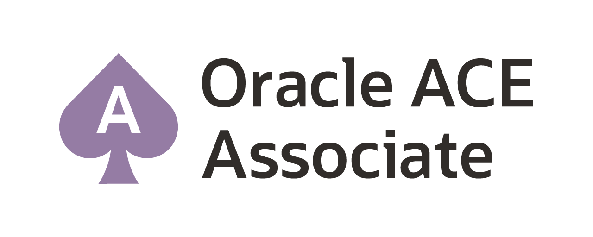

Short about me
- more than 30 years experience in IT, located in Germany
- different leading roles in software development and project management
- special focus on:
- design, architecture and runtime performance of ERP software
- efficient processing of large data amounts
- deep dive tuning of applications using Oracle databases
- Employed at Otto Group Solution Provider (OSP)
- Find more at:
|

|